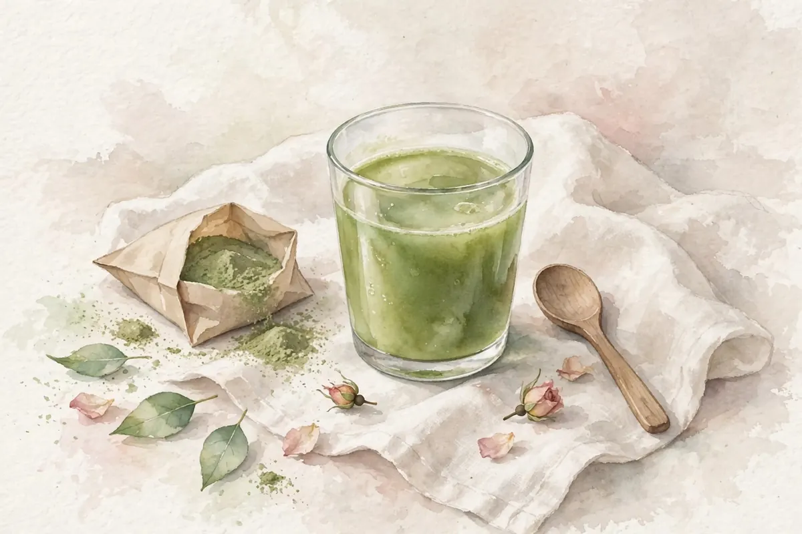

トップ ＞ インナーケア・サプリ ＞ 青汁など粉末飲料の原材料表示の読み方
青汁など粉末飲料の原材料表示の読み方

粉末を水や牛乳に溶かして飲むタイプの飲料は、青汁をはじめ、いろいろな種類があります。パッケージを見ると、原材料名や栄養成分の表示が並んでいて、どこを見ればいいのか迷うこともあります。この記事では、粉末飲料の表示の読み方を、現役セラピストの視点で整理します。特定の商品をおすすめするものではありません。
原材料名は、多い順に並んでいる
食品の表示では、原材料名は使われている量の多い順に並べる決まりがあります。粉末飲料も同じで、原材料名の欄の一番前に書かれているものが、最も多く使われている材料です。青汁タイプのものであれば、ケールや大麦若葉などの野菜の粉末が前に来ることが多く、次に甘みや飲みやすさのための材料が並びます。
「野菜が入っている」と表示されていても、原材料名の順番を見ると、野菜の粉末よりほかの材料が前に来ていることもあります。パッケージの表側の言葉だけで判断せず、裏面の原材料名の並びを確認するのが、私の基本の読み方です。また、原材料名の欄に「○○末」と書かれているものは、野菜や果物を乾燥させて粉末にしたもので、「○○エキス末」は、成分を抽出して粉末にしたものです。同じ野菜の名前でも、末とエキス末では中身が違います。表側の言葉と裏面の原材料名を、セットで見る癖をつけておくと、選び方がぶれにくくなります。
「1杯あたり」と「1袋あたり」の違い
栄養成分の表示で気をつけたいのは、表示の単位です。「1杯あたり」「1袋あたり」「100gあたり」など、表示の基準が商品によって違います。1杯分が1袋と同じ商品もあれば、1袋を数回に分けて使う商品もあります。1杯あたりの数字だけを見て、ほかの商品の1袋あたりの数字と比べると、比べる土台がずれてしまいます。
私が確認するのは、1袋に何杯分入っているか、という点です。たとえば「1袋30杯分」と書かれていれば、1袋の値段を30で割って、1杯あたりの値段の目安が出ます。粉末飲料は毎日続ける人が多いので、1杯あたりの負担を計算しておくと、続けやすさが見えてきます。1杯分の粉末の量は、付属のスプーン1杯分や、個包装1袋分など、商品によって違います。付属のスプーンを使うときは、すりきり1杯なのか、山盛り1杯なのかも、表示で確認しておきます。
飲む量と回数、保管の表示
粉末飲料のパッケージには、「1日1〜2杯を目安に」といった、飲む量の目安が書かれていることがあります。この目安は、商品の設計に合わせたものです。たくさん飲めば、その分早くなくなるだけで、表示の目安を守るのが基本です。飲むタイミングについては、食後や起床時など、商品ごとに案内が書かれていることがあります。
保管の表示も確認しておきます。粉末は湿気を吸いやすいので、開封後は袋の口をしっかり閉じて、直射日光の当たらない場所に置くのが基本です。個包装のものは、1回分ずつ分かれているので、持ち運びや外出先での管理がしやすくなります。賞味期限は、未開封の状態での期限です。開封後は、パッケージに書かれた目安の期間内に使い切るようにします。
溶かすときの水の量も、表示で確認しておきます。「水100mLに1袋」といった案内が書かれていることがあります。水が少なすぎると粉末が溶けにくく、多すぎると薄く感じることがあります。粉末を入れたら、スプーンやマドラーでよくかき混ぜます。ダマが残るときは、少量の水で先に溶いてから、残りの水を足すと、溶けやすくなります。牛乳や豆乳に溶かす場合は、水で溶かすときと味の感じ方が変わるので、表示の案内に従ってください。
粉末飲料の表示は、原材料名の並びと、1杯あたりの数字の基準、この2つを押さえるだけでも、読み方がずいぶん変わります。新しいものを買うときは、まず裏面の原材料名から見てみてください。
セラフィナ「原材料名は多い順、数字は1杯あたりか1袋あたりか。比べるときは土台をそろえるんだね」